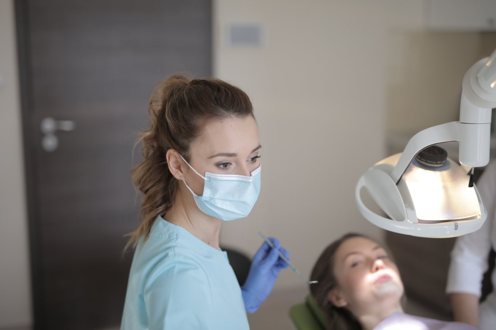
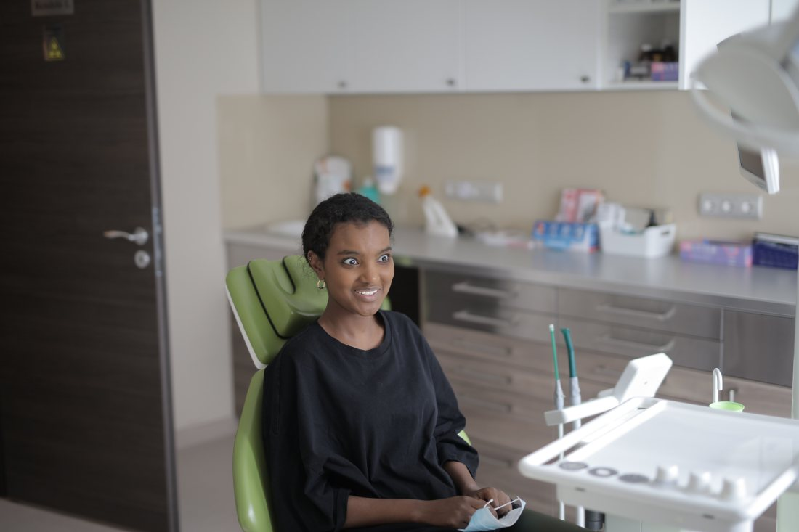
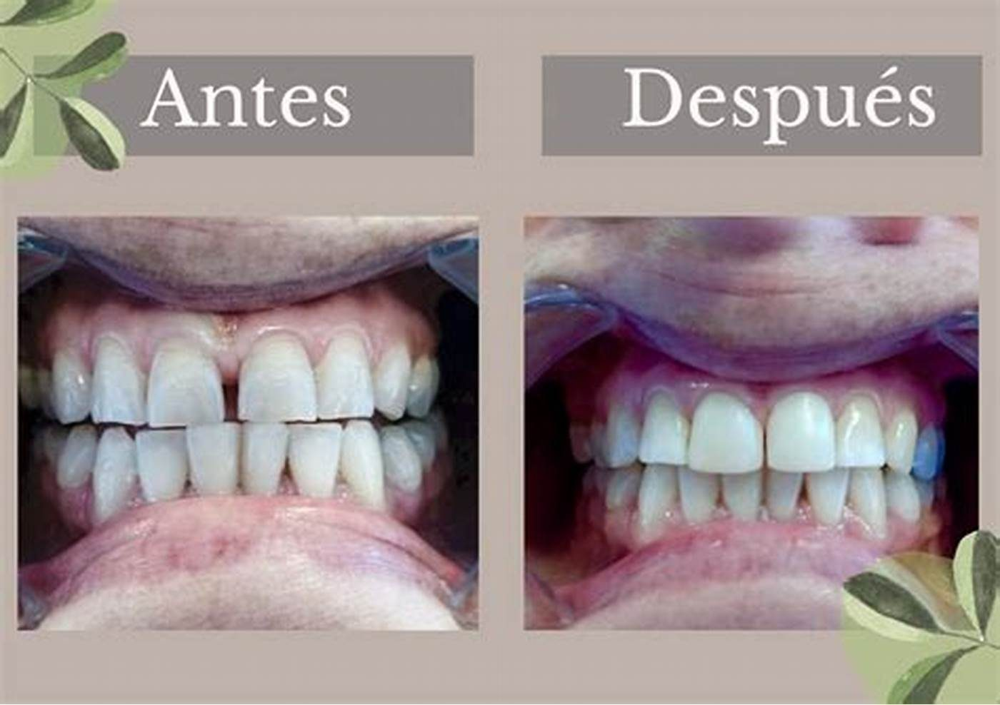

Duele ahora
9 7552 3211
Un dolor de muela no espera a que alguien revise un formulario. El número va primero, y al lado va lo único que sirve mientras tanto.
- nota en Google
- 5,0
- reseñas
- 41
Lo que casi nadie explica
La urgencia dental de verdad
No todo dolor de dientes es una urgencia, y no toda urgencia duele. Saber distinguirlas evita dos cosas malas: pasar la noche en vela por algo que aguantaba hasta el lunes, y esperar el lunes por algo que no aguantaba.
No espera
Es urgencia
- Golpe con diente quebrado o salido. Sobre todo si es un diente definitivo: acá las horas cambian el resultado.
- Hinchazón que crece, sobre todo si sube hacia el ojo o baja al cuello, y más todavía si hay fiebre o cuesta tragar o abrir la boca. Eso ya no es sólo dental: es servicio de urgencia.
- Sangrado que no para después de una extracción, con presión mantenida y sin escupir a cada rato.
- Dolor que no cede con lo que normalmente le sirve a esa persona, o que la despierta de noche.
Aguanta hasta la hora
No es urgencia
- Sensibilidad al frío o al dulce que pasa sola en segundos.
- Una tapadura que se salió y no duele.
- Un bracket suelto que molesta pero no hiere.
- Una muela del juicio saliendo, si no hay hinchazón ni fiebre.
Nada de esto es «no vaya»: es «pida hora tranquilo y no pierda una noche».
Esta página no diagnostica ni indica tratamiento, y no menciona ni un medicamento ni una dosis a propósito: eso lo indica quien atiende, con la boca a la vista. Si hay fiebre alta, dificultad para respirar o tragar, o una hinchazón que avanza rápido, corresponde ir a un servicio de urgencia y no esperar hora dental. El texto lo escribió quien hizo el sitio y lo revisa y lo firma la clínica antes de publicarse.
Lo que pasa cuando por fin hay hora
Primero se calma el dolor. Después se arregla.
Una urgencia dental casi nunca se resuelve en una sola sesión: lo primero es sacar el dolor, y recién con el paciente tranquilo se decide qué hacer con la pieza. Saberlo antes cambia la expectativa — nadie llega esperando salir con todo listo, y nadie se va con la sensación de que quedó a medias.
Cómo se pide
Hora de urgencia
Una clínica chica no puede tener pabellón abierto a toda hora, y nadie se lo pide. Lo que sí se puede tener escrito es qué hacer para conseguir la hora más cercana — y eso, hoy, no está en ninguna parte.
¿Guardan cupos de urgencia?
Muchas clínicas dejan uno o dos espacios al día sin agendar justamente para esto. Decirlo cambia la llamada entera.
falta: si los guardan y a qué hora del día
¿Hasta qué hora contestan?
El horario de atención y el horario en que alguien lee los mensajes casi nunca son el mismo, y eso es lo que el paciente necesita saber a las nueve de la noche.
falta: horario de atención y horario de mensajes
¿Qué pasa un domingo?
Aunque la respuesta sea «no atendemos», escribirlo sirve: el paciente deja de llamar a ciegas y sabe adónde ir mientras tanto.
falta: qué recomiendan ustedes fuera de horario
¿Qué conviene decir al llamar?
Desde cuándo duele, si hay hinchazón o fiebre, si hubo un golpe y si ya se tomó algo. Con eso, quien contesta puede priorizar de verdad.
falta: confirmar que así lo prefieren
A las tres de la mañana nadie llena un formulario
Por eso el número va primero, grande y solo
El número, otra vez
9 7552 3211
Es el número publicado en su ficha de Google.



Dónde quedan, y qué publican
Fotos de su propio Facebook. La de arriba es el edificio de Francisco Bilbao donde atienden, de noche — que es justo la hora en que uno busca. La otra es un trabajo suyo, publicado por ellos.

falta: una foto de la sala de espera y otra del box. Y el dato que esta página pide a gritos: hasta qué hora contestan de verdad.